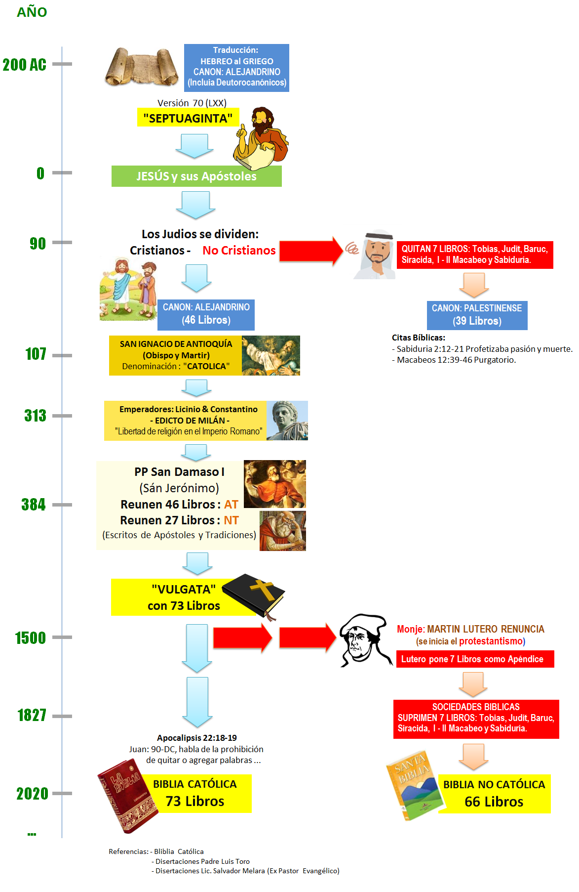

Según la historia sabemos que hubo un pueblo elegido por Dios, se inició entre las pequeñas comunidades nómadas, posteriormente el pueblo judío hasta llegar a los gentiles (no judíos). El “encargo” divino empieza con Abraham, Isaac, Jacob (Israel y las 12 Tribus), Moisés, hasta llegar a Jesús. Con él se universaliza la Fe y nos es dada la salvación a “todos” sin excepción de raza, credo o condición humana.
Esto lo sabemos por las evidencias orales y escritas, que fueron transmitidas a través de los tiempos, de generación en generación. Una de las fuentes de información en nuestros días es la Biblia, dividida en Antiguo Testamento; tomada de nuestros hermanos mayores de la Fe Judía y El Nuevo Testamento; recopilado de los escritos y tradiciones a partir de Jesucristo. Pero- ¿Cómo se forma “La Biblia” tal cual lo conocemos en la actualidad?
Para tener una idea, habría que remontarnos a través de la historia y trazar una línea de tiempo. En el siguiente gráfico; después de averiguar algunas fuentes (descritas el pie de página), he tratado de graficar esa línea de tiempo/información que nos lleve a ver como se formó y quienes dijeron al mundo “ESTO ES PALABRA DE DIOS”.

Aqui algunas opiniones:
Primero el Mons. Munilla luego el Lic. Salvador Melara (ex protestante) explican lo siguiente sobre el CANON BIBLICO:
Resultado del Sinodo de Laodicea (Año 360) (Definieron cuales eran apócrifos y cuales eran inspirados)
- Antiguo Testamento: 46
- Nuevo Testamento: 27
- Total de libros: 73 (hasta la actalidad)
Aquí una manera de confundir, quizás por desconocimiento, la opinión del Hermano Rubén Sánchez de la
"Iglesia" piedra de ayuda (Barcelona España), donde indica lo siguiente:
- Antiguo Testamento: 39 Libros
- Nuevo Testamento: 27 Libros
- Total de libros: 66
No menciona donde ni quienes se "reunieron" y conluyeron en que esa "lista de libros" eran "PALABRA de DIOS”
ni porque y cuando suprimieron los 7 Libros supuestos apócrifos.